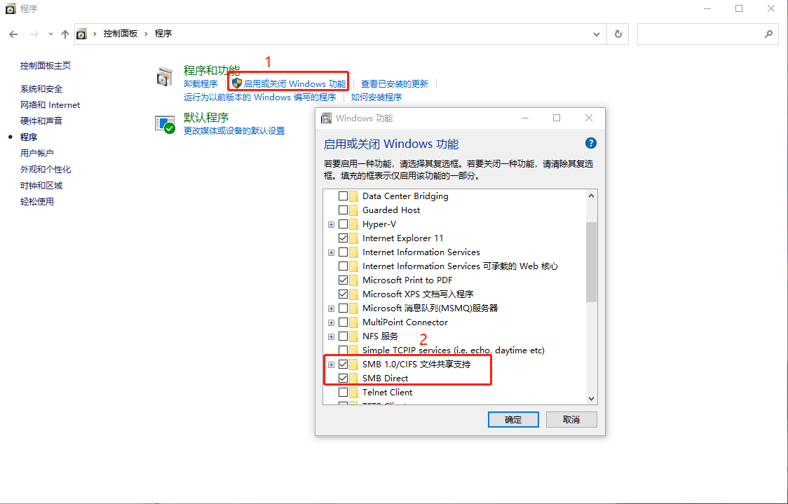

树莓派4个人网盘搭建
- 前言
- 前提条件
- 前期准备工作
- 域名购买
- 域名解析
- 创建服务账户
- 配置证书
- 挂载移动硬盘
- 配置 aria2
- 配置 nginx
- 配置 Aria2 WebUI
- 配置 cloudreve
- 更新证书时自动将服务重启
- 配置 samba 服务
- 后记
- 参考链接
前言
本文介绍如何使用树莓派搭建个人网盘，配合 aria2 进行离线下载，通过域名访问可直接访问树莓派网盘服务，可以随时观看离线下载的电影、访问文件、上传文件、分享文件(私密分享、到期分享)等，与使用百度网盘效果一样，文件访问速度取决于你家里的宽带上行速度。注意阅读本文需要你有一定的 linux 命令行基础。
前提条件
你需要确定你家宽带可以获取公网 IP ，可以向电信运营商客服咨询。我的宽带为光纤入户，光猫只是做桥接，使用路由器进行拨号上网，这样路由器相当于网关，树莓派运行在路由器内网中(包括你家的电脑、手机等)，然后给树莓派分配静态 IP，当需要在外网访问树莓派的服务(web 服务)，需要在路由器做端口映射(转发)。
前期准备工作
树莓派购买
可在在某宝上搜索关键字树莓派4B，也可以在树莓派官网进行购买，选择中国地区可以显示购买链接：
树莓派4B 内存版本有 2GB、4GB、8GB版本，个人购买的是 2GB 版本，可以流程运行 ubuntu server 20.04 LTS (没有测试过图形界面)。需要注意的是，除了树莓派主板之外，想要运行树莓派，还需要 SD 卡、树莓派电源。树莓派主板、SD 卡、树莓派电源是必需的三件套，其中 SD 卡推荐读写速度 class10 以上，SD 卡读写规格如下：
micro HDMI 线、SD 读卡器、散热器、网线、移动硬盘等其他配件可按个人需求购买。SD 读卡器用于将系统镜像烧录到 SD 卡中，如果没有则需要购买，移动硬盘用于网盘服务存储(我个人移动硬盘容量为2T)，如果你家里有矿，也可以选择硬盘柜(硬盘柜需要独立供电)。
下载树莓派镜像
首先下载官方的烧录工具 imager，根据你当前使用的操作系统选择不同版本：
下载完毕之后需要打开进行安装，安装完毕之后，打开软件，初始运行界面如下：
单击 “CHOOSE OS” 选项可以选择下载的镜像：
这里我选择 “Ubuntu”，然后选择 “Ubuntu server 20.04 LTS” 64 位：
按个人喜好选择你喜欢的镜像下载，本文仅在 “Ubuntu server 20.04 LTS” 验证过，其他镜像可作为参考，不保证成功。
选择完毕之后，回到始运行界面，这时候需要将 SD 卡插入到 SD 读卡器中，然后将读卡器插入到你的电脑(windows 系统自动识别，如果是 Linux 系统可能需要手动挂载)。然后单击 “CHOOSE SD Card” 选项选择需要烧录到 SD 卡盘符，需要正确选择，因为烧录之前会进行格式化，选择完毕之后，单击 “WRITE” 选项，imager 工具会自动下载你选择的镜像然后烧录到 SD 卡中，花费时间却决于你的网络速度以及 SD 卡写入速度。
以上方法是通过 imager 工具在线下载镜像，你也可以事先下载好镜像，然后通过 “Use custom” 选项选择下载好的镜像，然后再烧录到 SD 卡中：
树莓派 ubuntu 镜像可以访问 https://ubuntu.com/download/raspberry-pi 链接自行选择版本下载，其他系统镜像可自行网络上搜索。
以下为烧录过程示意图：
配置树莓派网络连接
如果你选择通过网线直接将树莓派连接到路由器，可跳过本章节，如果使用无线网络连接，则按以下步骤进行配置。
烧录镜像完毕之后，SD 卡会被分成两个区(windows 下可能需要重新拔插 SD 读卡器才能识别)，其中一个分区为 “system-boot”：
在 “system-boot” 分区下找到 network-config 文件，然后打开该文件，该文件内容内容如下：
1 | # This file contains a netplan-compatible configuration which cloud-init |
其中 # 开头的行会被注释，我们需要在该文件末尾加入以下内容：
1 | wifis: |
将 “home network” 换成你的 WiFi 名称(推荐先选择 2.4G 网段)，”123456789” 换成你的 WiFi 密码，比如你家的 WiFi 为 “ChinaNet-X9ej”，密码是 “123456789”，则内容应为：
1 | wifis: |
修改完毕之后，保存文件。注意在第一次启动树莓派时，树莓派将尝试连接到该网络，可能会失败，只需重新启动即可(多次)。
启动树莓派
配置完镜像文件之后，将 SD 卡从读卡器取出，然后插入到树莓派 SD 读卡器上，连接电源，连接网线(可选，通过有线网)，树莓派4B 接口示意图如下：
可以访问树莓派帮助页面查看动态示意图 https://www.raspberrypi.org/help/ 。
接好线之后，启动树莓派电源开关即可启动树莓派。树莓派启动成功之后，可在路由器查看树莓派的内网 IP 地址，如果你通过有线网络将树莓派连接到路由器，同时配置了无线网络，可能会看到两个 IP， 选择其中一个 IP，假设 IP 为 192.168.0.100，则通过 ssh 连接到树莓派的命令行为：
1 | ssh ubuntu@192.168.0.100 |
ubuntu 镜像创建默认账户名为 ubuntu， 如果你是使用 ssh 客户端软件比如 x-shell、mobaXterm 等可视化终端，则需要正确填写用户名以及 IP(我通过是 Windows Terminal 打开 wsl 页面，然后通过 ssh 命令登陆)。第一次连接上树莓派时提示你修改密码，可按提示修改密码，密码修改完毕之后，下次 ssh 登陆需要使用新的密码登陆。
域名购买
因为需要公网访问树莓派提供的网盘服务，同时电信运营商给的公网 IP 可能会变化(实测下来，电信宽带几乎每两天一变)，因此可通过域名的方式访问你自己搭建的服务。按自己个人选择可在国内或者国外购买域名，国内域名购买一般需要备案，推荐到国外购买。我个人是在 namesilo 购买的域名。购买完毕之后，可在个人账户中管理域名的解析，将域名服务(NameServer)设置为 dnspod 域名服务：
1 | f1g1ns1.dnspod.net |
namesilo 修改示意图为：
点击提交即可，其他域名厂商后台管理大同小异，可自行搜索资料进行修改。使用 dnspod 的原因是因为电信的公网 IP 会经常变，实测下来大概两天变一次，因此需要在后台运行一个脚本，每隔一段时间检测当前的公网IP，如果变化则使用 dnspod API 更新域名的解析。
域名解析
在 dnspod 官网注册账号之后，在 dnspod 控制台添加一条域名解析记录，假设你的域名为 example.top，想通过 http(s)://example.top 访问你的网站，则添加的域名解析如下：
主机记录为 @**， 记录值为 **1.1.1.1，1.1.1.1 需要替换成你真实宽带的 IP 地址；
如果想通过 http(s)://www.example.top 访问你的网站，则添加的域名解析如下：
主机记录为 www，记录值为 1.1.1.1，1.1.1.1 需要替换成你真实宽带的 IP 地址。
同时可在 dnspod 个人账户中安全中心生成 API Token，API Token 分为两部分：ID 以及 Token，ID 以及 Token 组合起来才能使用 dnspod 的 API，格式如下：
1 | ${ID},${Token} |
比如：
1 | 123456,abcdefghjklabcdefghjklabcdefghjklabcdefghjkl |
推荐使用 dnspod-shell 进行动态域名解析，将 dnspod-shell 下载之后，dnspod-shell 目录结构为：
1 | . |
使用到文件为 ardnspod 与 ddnspod.sh，其中修改 ddnspod.sh 为：
1 |
|
需要注意的是，dnspod 对于免费版本的域名解析调用 API 次数限制为 3000 次/小时，具体可参加 dnspod API 说明。创建 crontab 文件，设置每隔 10 分钟运行 ddnspod.sh 脚本:
1 | */10 * * * * your_real_path/ddnspod.sh |
your_real_path/ddnspod.sh 为 ddnspod.sh 脚本的绝对路径。crontab 具体使用方法可参考教程。
另外也可以使用DDNS，DDNS 支持平台比较多，可自行查阅官方文档。
至此，域名购买以及解析已经完成，至于如何如何获取从电信运营商获取宽带公网 IP ，不在本文讨论范围，可查阅其他资料或者咨询电信运营商客服。
创建服务账户
因为使用开源组件，为了降低开源组件(可能存在的缺陷等)对系统的影响和其相互影响建议建立不同的用户运行组件，建议建立不同的用户，如果嫌麻烦，使用同一用户即可。在创建用户之前，确保你已经创建了其他普通用户。
本文使用 acme.sh(Let’s Encrypt ) 为 aria2 以及 cloudreve 生成证书，同时 cloudreve 需要与 cloudreve 在同一用户下(原因后续提到)，因此建立 acme 以及 web-server 用户：
1 | sudo groupadd certusers |
其中 sudo groupadd certusers 添加用户组 certusers，并且将 web-server 以及 acme 添加到用户组 certusers 中，-M 为不需要生成 home 目录，-m 为生成 home 目录，-r 设置为系统用户，并且不设置密码。
这里我们创建两个用户，分别为 web-server 以及 acme。其中用户 web-server 只需要运行 aria2、cloudreve 服务，而用户 acme 需要家目录配置 acme.sh。注意到，并未给这两个用户设置密码，所以只能通过其他已经登录的用户切换过去，这样尽可能的保证了系统的安全与任务的独立。因为 web-server 和 acme 都需要读写证书文件，所以将 web-server 和 acme 添加到同一个用户组 certusers，待申请到证书后将证书所有权交给用户组 certusers 并允许组内用户访问即可。
配置证书
本文使用 acme 脚本(自动化申请证书客户端)向 Let’s Encrypt 机构申请域名证书。Let’s Encrypt 是一个于 2015 年三季度推出的数字证书认证机构，旨在以自动化流程消除手动创建和安装证书的复杂流程，并推广使万维网服务器的加密连接无所不在，为安全网站提供免费的传输层安全性协议（TLS）证书。唯一缺点是向 Let’s Encrypt 机构申请的证书的只有三个月期限，但是 acme 脚本会在证书到期之前自动重新申请，无需人工干预。需要指出的是目前大多数云长商也都提供了免费证书申请，比如阿里云、腾讯云等，可按个人喜好进行申请，如果你已经拥有自己域名证书，可跳过本章节。
创建证书文件夹
新建一个文件夹 /etc/letsencrypt/live 用于存放证书，并且将证书文件夹所有者改为 acme，使得用户 acme 有权限写入证书：
1 | sudo mkdir -p /etc/letsencrypt/live |
安装自动管理 CA 证书脚本
分别执行如下命令，注意看是否报错。第一条命令切换到用户 acme。第二条命令安装 acme.sh。第三条命令退出当前用户。第四条命令再次切换到用户 acme。注意到这里两次切换用户的操作不能省略，因为安装完 acme.sh 之后要重新登录当前用户，否则无法识别出 acme.sh 命令。
1 | sudo su -l -s /bin/bash acme |
1 | curl https://get.acme.sh | sh |
1 | sudo su -l -s /bin/bash acme |
使用 DNSPod API 申请证书
执行以下命令，需要将 example.top 换成你的实际域名，DP_Id 以及 DP_Key 换成你的实际 dnspod API token：
1 | export DP_Id="1234" |
等一会，证书就会自动生成了。这里给出的 DP_Id 和 DP_Key 会被自动记录下来, 将来再使用 acme.sh 的时候，就不需要再次指定了，直接生成就好了:
1 | acme.sh --issue --dns dns_dp -d example.top |
安装证书
第一条命令使用 acme.sh 将证书安装到 /etc/letsencrypt/live 目录，这样 acme.sh 更新证书的时候会自动将新的证书安装到这里。第二条命令是配置 acme.sh 自动更新和自动更新证书。
1 | acme.sh --install-cert -d example.top --key-file /etc/letsencrypt/live/private.key --fullchain-file /etc/letsencrypt/live/certificate.crt |
1 | acme.sh --upgrade --auto-upgrade |
修改权限
最后还要允许组内用户访问证书。可通过如下命令实现。第一条命令将证书文件夹所在用户组改为 certusers。第二条命令是赋予证书文件夹组内用户读取权限。运行这两条命令之后用户 web-server 就有权限读取证书了。第三条命令退出用户 acme，因为证书已经安装完成。
1 | chown -R acme:certusers /etc/letsencrypt/live |
注意申请的证书只有三个月期限，acme.sh 脚本会在证书到期之前自动更新证书，但是因为 aria2 与 cloudreve 都用到证书，因此在 acme.sh 更新证书的同时需要将 aria2 与 cloudreve 服务重新拉起，后文提到怎么使用 acme.sh 的 –reloadcmd 选项做到这一点。
挂载移动硬盘
个人在树莓派挂载 2T 2.5寸的移动硬盘，可按实际(消费能力)需求购买移动硬盘或者硬盘柜，注意树莓派4供电能力不算特别强，挂载两块以上的移动硬盘最好使用 USB 集线器单独供电。
将移动硬盘 USB 接口插到树莓派4 的 USB 3.0，树莓派接口示意图如下：
使用 fdisk 命令可查看硬盘信息：
1 | sudo fdisk -l |
这里为我的树莓派输出信息，/dev/mmcblk0p1 与 /dev/mmcblk0p2 是 SD 卡的分区，/dev/sda 为移动硬盘。第一次挂载硬盘时需要格式化，格式化完之后，后续不需要再次格式化，直接挂载即可。linux 文件系统 ext4、xfs 等可选，这里选择 xfs 文件系统，格式化命令为(注意将 /dev/sda1 换成你实际的磁盘设备)：
1 | mkfs.xfs /dev/sda1 |
然后在根目录创建文件用于挂载磁盘，比如在 /media/ 目录下创建 data 目录并且将 data 目录修改为 777：
1 | sudo mkdir /media/data |
将已经格式好的磁盘挂载到 /media/data 目录(注意将 /dev/sda1 换成你实际的磁盘设备)：
1 | sudo mount /dev/sda1 /media/data |
使用 mount 命令查看磁盘是否挂载成功，如果有输出结果，则挂载成功，输出举例如下(注意将 /dev/sda1 换成你实际的磁盘设备)：
1 | sudo mount | grep /dev/sda1 |
设置开机自动挂载，编辑 /etc/fstab 文件，在文件末尾加上以下配置(注意将 /dev/sda1 换成你实际的磁盘设备)：
1 | /dev/sda1 /media/data xfs auto 0 0 |
然后将文件保存即可，如果树莓派重启，系统会自动挂载该磁盘设备。
配置 aria2
aria2 简介
官网地址：aria2官网：
aria2 is a lightweight multi-protocol & multi-source command-line download utility. It supports HTTP/HTTPS, FTP, SFTP,BitTorrent and Metalink. aria2 can be manipulated via built-inJSON-RPC and XML-RPC interfaces.(Aria2是一个命令行下轻量级、多协议、多来源的下载工具（支持 HTTP/HTTPS、FTP、BitTorrent、Metalink），内建 XML-RPC 和 JSON-RPC 用户界面。)
aria2 安装
执行以下命令：
1 | sudo apt install aria2 |
即可完成安装，如果有需求，也可以从官网下载代码自行编译安装。
aria2 配置
创建配置文件夹:
1 | sudo mkdir /etc/aria2/ |
新建 /etc/aria2/aria2.conf 配置文件，在 /etc/aria2/aria2.conf 文件中输入以下配置：
1 | # 文件的保存路径(可使用绝对路径或相对路径), 默认: 当前启动位置 |
需要注意的选项:
dir 保存下载文件的绝对路径，由于使用 web-server 用户运行 aria2，因此该路径必须存在，且 web-server 拥有读写权限
save-session 保存下载会话的文件绝对路径，文件名称 aria2.session ，需要事先创建 aria2.session 文件，并且 web-server 拥有读写权限
input-file 同 save-session
rpc-secret 访问 aria2 rpc 服务的令牌，cloudreve 服务需要该令牌才能访问 aria2 进行离线下载，建议设置 32 位以上
rpc-secure 开启 ssl 加密，需要设置为 true
rpc-certificate 在 RPC 服务中启用 SSL/TLS 加密时的证书文件，这里与前面申请证书设置路径一致
rpc-private-key 在 RPC 服务中启用 SSL/TLS 加密时的私钥文件，这里与前面申请证书设置路径一致
rpc-listen-port RPC监听端口, 端口被占用时可以修改, 默认:6800
listen-port BT监听端口, 当端口被屏蔽时使用,
dht-listen-port DHT网络监听端口, 按实际情况设置
其中使用到的端口需要在你自己的路由器进行端口转发或者映射到树莓派静态 IP 上(见下文配置 nginx 章节解释)，不同路由器操作方法不一样，具体配置方法可自行查询。
配置中使用到的设置可以按照实际情况进行，举例如下：
创建 /media/data/aria2_data 目录:
1 | sudo mkdir /media/data/aria2_data |
修改 /media/data/aria2_data 目录拥有者为 web-server 用户：
1 | sudo chown -R web-server:web-server /media/data/aria2_data |
创建 /media/data/aria2.session：
1 | sudo touch /media/data/aria2.session |
修改 /media/data/aria2.session 文件为拥有者为 web-server 用户：
1 | sudo chown web-server:web-server /media/data/aria2.session |
注意必须确保 web-server 对 /media/data/aria2_data 与 /media/data/aria2.session 拥有读写权限
设置 aria2 开机启动
创建 /etc/systemd/system/aria2cd.service 文件，输入以下内容：
1 | [Unit] |
注意 User 与 Group 设置为 web-server，启动 aria2c 提供的配置为 /etc/aria2/aria2.conf。
然后重新加载配置文件(可选)：
1 | sudo systemctl daemon-reload |
使能 aria2c 开机启动：
1 | sudo systemctl enable aria2cd.service |
使用 systemd 启动 aria2c
1 | sudo systemctl restart aria2cd.service |
如果启动不成功，可以使用以下命令查看日志：
1 | sudo journalctl -f -u aria2cd.service |
配置 nginx
aria2c 是一个后台程序，为了使用可视化的 web 页面操作 aria2c，可以配置 aria2c 前端界面，在配置前端界面之前，需要先安装 nginx，cloudreve 的离线下载功能提供操作 aria2c 界面，如果仅使用 cloudreve 操作 aria2c，可跳过本节内容。
使用以下命令安装 nginx:
1 | sudo apt update |
安装完成后，nginx 服务将自动启动，可以使用以下命令检查服务的状态：
1 | ● nginx.service - A high performance web server and a reverse proxy server |
添加 nginx 服务用户到 certusers
为了让 nginx 使用 ssl 证书加密网站，需要将 nginx 服务用户加到 certusers 组中，根据以下命令查看 nginx 服务的用户名：
1 | ps -eo user,command | grep nginx |
上述命令输出第二行第一列即为 nginx: worker process 所属用户，然后根据实际情况，运行下面三个命令之一：
1 | sudo usermod -G certusers www-data |
1 | sudo usermod -G certusers nginx |
1 | sudo usermod -G certusers nobody |
关闭默认虚拟主机
在 ubuntu 系列系统中，nginx 的虚拟主机配置文件在 /etc/nginx/sites-available/ 文件夹中，如果要开启某一个虚拟主机，则建立一个软连接到 /etc/nginx/sites-enabled/ 文件夹并重启 nginx 即可。默认虚拟主机在 /etc/nginx/sites-enabled/ 文件夹，需要关闭掉，否则会冲突。
使用如下命令关闭Nginx默认虚拟主机：
1 | sudo rm /etc/nginx/sites-enabled/default |
根据域名配置虚拟主机
在 /etc/nginx/sites-available 目录创建新的虚拟主机，文件名为 example.top (注意域名 example.top 改为你自己的域名，这是虚拟主机的文件名，只是用来自己识别的)：
1 | sudo touch /etc/nginx/sites-available/example.top |
然后编辑 /etc/nginx/sites-available/example.top 文件，输入以下内容(注意将 example.top 改为你自己的域名)：
1 | server { |
listen 443 ssl 配置 nginx 服务监听 443 端口并且使用 ssl 加密
ssl_certificate 配置域名证书文件路径
ssl_certificate_key 配置域名证书私钥文件路径
server_name 配置域名
root 配置网站静态文件的根目录
1.需要注意的是监听 443 端口是指树莓派监听它网卡设备上的 443 端口，一般树莓派是接在路由器，因此树莓派其实监听的是内网地址的 443 端口，比如 192.168.1.190:443，内网网段取决于你使用的路由器。再者，运营商一般都会封禁 80、443 端口，因此需要在路由器配置端口映射或者端口转发。比如在路由器上将 5001 端口映射(转发)到内网树莓派(树莓派在内网需要拥有静态IP，一般可通过路由器设置)的 443 端口上，这样在外网可以通过以下地址访问(注意将 example.top 改为你自己的域名)：
1 | https://example.top:5001 |
2.这里使用了 /var/www 目录用于存放用户自定义网站静态文件，因此需要创建：
1 | sudo mkdir /var/www/ |
由于 nginx 只需要读取 /var/www/ 目录下的静态文件，因此不需要修改 /var/www/ 访问权限。然后使能配置文件(注意 example.top 改为你自己的域名)：
1 | sudo ln -s /etc/nginx/sites-available/example.top /etc/nginx/sites-enabled/ |
重启 nginx:
1 | sudo systemctl restart nginx |
可以在浏览器输入 https://example.top:5001 或者通过 curl 命令测试(注意将 example.top 改为你自己的域名)：
1 | curl -L https://example.top:5001 |
配置 Aria2 WebUI
为了使用可视化的 web 页面操作 aria2，可使用 webui-aria2 配合 nginx 管理 aria2。首先将 webui-aria2 项目下载：
1 | git clone https://github.com/ziahamza/webui-aria2.git |
然后将 webui-aria2 目录下的 docs 目录拷贝到 /var/www 目录下，/var/www 为配置 nginx 时创建的目录：
1 | sudo cp -r webui-aria2/docs/ /var/www |
重命名 docs 为 aria2
1 | sudo mv /var/www/docs /var/www/aria2 |
然后在浏览器输入 https://example.top:5001/aria2 即可访问 webui-aria2 web 页面(注意将 example.top 改为你自己的域名)，如果访问不了，可能需要重启 nginx 服务，然后再重试
设置 webui-aria2 页面
打开 https://example.top:5001/aria2 页面效果如下：
点击设置按钮，再点击连接设置：
然后在以下页面输入信息：
主机 主机即域名，这里需要将 example.top 改为你自己的域名
端口 注意端口为 6800 而不是 5001，6800 为 aria2 监听的 rpc 端口(见上文配置)
命令令牌 命令令牌需要与 aria2 配置中令牌一致
然后点击保存链接即可，保存完成后，可以通过添加按钮添加需要下载的文件，支持种子、磁力链接等，与使用迅雷无异，并且没有限速度。
配置 cloudreve
cloudreve 一款开源免费的网盘系统，借助 cloudreve 能够快速搭建起公私兼备的网盘，其演示界面如下：

cloudreve 支持特性如下：

安装 cloudreve
1.首先在在挂载移动硬盘目录下创建 cloudreve 的工作目录以及 cloudreve 离线下载目录 temp，以移动硬盘挂载到 /media/data 目录为例，
执行以下命令：
1 | sudo mkdir /media/data/cloudreve_home/ |
将 /media/data/cloudreve_home 所有权修改为 web-server：
1 | sudo chown -R web-server:web-server /media/data/cloudreve_home/ |
至此准备工作完毕。
2.cloudreve 官网有构建好的二进制安装包，注意选择 arm 平台，选择 64 位还是 32 位取决于你树莓派安装的系统。选择最新版本，下载完解压得到 cloudreve 可执行文件，如果没有可执行权限，使用以下命令增加可执行权限：
1 | chmod +x ./cloudreve |
然后将 cloudreve 可执行文件拷贝到 /media/data/cloudreve_home/，将 cloudreve 所有权改为 web-server(可选):
1 | sudo chown -R web-server:web-server /media/data/cloudreve_home/ |
3.创建 /etc/systemd/system/cloudreve.service 文件，输入以下信息：
1 | [Unit] |
注意 User 与 Group 都设置为 web-server(用户)，WorkingDirectory 设置为 /media/data/cloudreve_home(工作目录)，ExecStart 设置为 /media/data/cloudreve_home/cloudreve(启动命令)。如果路径不相同，可自行替换
4.执行以下命令第一次启动 cloudreve：
然后重新加载配置文件(可选)：
1 | sudo systemctl daemon-reload |
使能 cloudreve 开机启动：
1 | sudo systemctl enable cloudreve.service |
使用 systemd 启动 aria2c
1 | sudo systemctl restart cloudreve.service |
然后使用以下命令查看 cloudreve 第一次输出日志：
1 | sudo journalctl -u cloudreve.service |
如果没有出错，则 cloudreve 日志书如下：
1 | [Info] 2020-09-12 10:19:09 初始化数据库连接 |
其中需要记录管理员账号以及管理员密码，后续第一次登陆到 cloudreve web 页面需要，请实际记录你自己的初始管理员密码。
另外 cloudreve 会在 /media/data/cloudreve_home 生成两个文件：
1 | conf.ini cloudreve.db |
其中 conf.ini 为 cloudreve 初始配置文件，cloudreve.db 为 cloudreve 使用的数据库文件，切记不可将 cloudreve.db 数据文件删除。
然后编辑使用 root 权限编辑 /media/data/cloudreve_home/conf.ini 文件(考虑到当前用户可能不是 web-server 用户)，根据实际情况修为以下信息：
1 | [System] |
其中 [System] 需要修改地方如下：
- Listen 主节点机监听的地址，由于只运行一个节点，不需要从节点，因此将此地址设置为回环地址 127.0.0.1:5004，不对外暴露
SessionSecret 与 HashIDSalt 由 cloudreve 自动生成，不需要更改。
添加 [SSL] 加密配置：
Listen 对外提供的 web 页面地址，这里设置为 :5003，表示监听所有网卡地址的 5003 端口
CertPath 设置域名证书的路径，证书在前文配置已申请安装
KeyPath 设置域名私钥的路径，私钥在在前文配置已申请安装
配置保存之后，重新修改 /media/data/cloudreve_home/conf.ini 所有权(可选)：
1 | sudo chown -R web-server:web-server /media/data/cloudreve_home/ |
5.使用以下命令重新启动 cloudreve：
1 | sudo systemctl restart cloudreve.service |
如果没有出错，现在路由器将 5003 端口映射(转发)到内网树莓派的 IP 地址上，然后在浏览器输入 https://example.top:5003 (注意将 example.top 换成你自己的域名)，可看到如下登陆界面：
填写之前记录的管理员账户以及初始密码即可完成登陆。点击右上角的头像，可进行账户管理：
选择管理面板后，进入控制面板页面：
然后选择依次点击参数设置、注册与登陆，将 “允许新用户注册” 选项关闭，因为只是个人使用，没必要开启多用户，同时也为了防止域名泄露被恶意注册：
在 “参数设置” 选项下，点击 “离线下载”，进行 aria2 离线下载设置：
需要填写 aria2 RPC 服务器地址、aria2 RPC Secret(aria2 rpc 令牌)、临时下载目录。aria2 RPC 服务器地址在设置 aria2 章节已经设置好，应为 https://example.top:6800(需要将 example.top 域名替换成你自己域名)，而 aria2 rpc 令牌则需要与 /etc/aria2/aria2.conf 文件设置 rpc 令牌一致，临时下载目录设置为 /media/data/cloudreve_home/temp，这个目录在前面章节已经创建完毕，并且所有者为 web-server，因为 cloudreve 与 aria2 服务都是以 web-server 用户启动的，因此需要确保 web-server 用户对设置的目录拥有读写权限(/media/data/cloudreve_home/temp)。填写完毕之后，可以点击测试链接进行测试。
然后点击用户组，点击管理员账户最右边编辑选项:
将存储容量修改为你实际硬盘的容量，这里我修改 2TB：
然后页面底下点击保存即可：
最后点击用户选项，对登陆邮箱、密码进行修改：
依次填入你的实际邮箱，昵称，以及密码，填写完毕之后，点击保存即可，建议密码长度 16 位以上。同时也可以在个人账户设置页面下设置两步验证：
至此 cloudreve 已经设置完毕，可在 cloudreve web 主界面进行文件管理，离线下载等功能。如果使用有问题可到官方论坛搜索答案或者提问。
更新证书时自动将服务重启
由于使用的是 acme 自动申请的证书，因此在 acme 更新证书的同时，需要把 nginx(如果安装)、aria2、cloudreve 服务重新启动，因为这三个服务都用到了证书。一般来讲，应用都是在启动时只读取一次证书，后续证书内容保存到应用内存中，因此当 acme 将证书更新并且把证书安装到设定路径时，需要把这三个服务重新启动。如果不是使用 acme 申请的证书，可跳过本章节。
配置重新加载 web 服务
前文章节提到使用以下命令进行证书安装：
1 | acme.sh --install-cert -d example.top --key-file /etc/letsencrypt/live/private.key --fullchain-file /etc/letsencrypt/live/certificate.crt |
example.top 为你的实际域名，/etc/letsencrypt/live 为证书安装路径。这里只要执行过的命令，acme.sh 会自动记录，并且在下一次重新申请证书时，自动调用。我们需要做的是使用 acme.sh 提供的 “–reloadcmd” 选项添加重启 nginx(如果安装)、aria2、cloudreve 服务命令即可，这个三个服务重启命令分别为：
1.nginx(如果你有安装此服务)，这里用的是 service nginx force-reload, 不是 service nginx reload, 据测试, reload 并不会重新加载证书, 所以用的 force-reload(https://github.com/acmesh-official/acme.sh/wiki/%E8%AF%B4%E6%98%8E)
1 | sudo /usr/sbin/service nginx force-reload |
2.aria2
1 | sudo systemctl restart aria2cd.service |
3.
1 | sudo systemctl restart cloudreve.service |
这三者服务的重启都需要 root 权限，但是 acme.sh 脚本运行(自动)在 acme 用户下，因此需要将这三个命令 root 权限(无需密码)赋予 acme 用户。需要指出的时，即使赋予 acme 用户 root 权限，acme 用户在执行 sudo 语句时需要输入 root 密码，因为不想在暴露 root 密码或者完全把 root 权限赋予 acme 用户，因此将三个重启服务的命令 root 权限(无需密码)赋予 acme 用户。
在 /etc/sudoers.d/ 目录下新建 acme 文件(ubuntu 环境，如果是其他系统请参考其他资料)：
1 | sudo touch /etc/sudoers.d/acme |
然后使用以下命令编辑 /etc/sudoers.d/acme 文件：
1 | sudo visudo /etc/sudoers.d/acme |
使用 visudo 会默认文本编辑器打开 /etc/sudoers.d/acme 文件，比如 nano、vim 等。系统默认编辑器可自行设定，比较简单方法是只保留你需要编辑即可，比如使用 vim，则可以把 nano 卸载，反之亦然。
回到正题，使用 visudo 编辑 sudoers 相关的权限文件是因为如果保存了无效的 sudoers 文件，则系统将无法解析该文件，则无法验证用户的 sudo 权限。因此，如果编辑了 /etc/sudoers.d/acme 文件但是语法是错误的，那么将无法通过 root 权限再次对其进行修复，同时所有的 sudo 命令提升都失败。此时只能切换到 root 用户修改文件进行编辑(通过 su root 命令切换)，因此在编辑 /etc/sudoers.d 目录下的文件是确保使用 visudo 命令或者确保你已经拥有 root 用户，强烈建议先建立 root 用户(系统一般自带 root 用户)并且设置 root 用户密码(sudo passwd root 设置 root 密码)再继续往下执行，如果万一出错，可切换到 root 用户进行补救(删除文件或者还原)。
我们使用 visudo 命令将 /etc/sudoers.d/acme 文件编辑为以下内容：
1 | acme ALL=(ALL) NOPASSWD: /usr/sbin/service nginx force-reload, /usr/bin/systemctl restart aria2cd.service, /usr/bin/systemctl restart cloudreve.service |
如果你没有安装 nginx 服务，则文件内容应为：
1 | acme ALL=(ALL) NOPASSWD: /usr/bin/systemctl restart aria2cd.service, /usr/bin/systemctl restart cloudreve.service |
“NOPASSWD” 设置执行 sudo 时不需要输入密码命令选项，由冒号后给出，以 “,” 分隔开。如果保存时语法错误，visudo 提示如下：
1 | /etc/sudoers.d/acme: syntax error near line 2 <<< |
接着我们输入 e 则继续编辑文件，输入 x 则退出但是不保存文件，输入 Q 则强制保存文件(强烈不推荐，这会导致 root 权限认证问题)。
如果保存成功，则需要切换到 acme 用户，重新设置 acme 安装证书时执行的命令，使用以下命令切换到 acme 用户：
1 | sudo su -l -s /bin/bash acme |
重新安装证书：
1 | acme.sh --install-cert -d example.top --key-file /etc/letsencrypt/live/private.key --fullchain-file /etc/letsencrypt/live/certificate.crt --reloadcmd "sudo /usr/sbin/service nginx force-reload && sudo systemctl restart aria2cd.service && sudo systemctl restart cloudreve.service" |
如果你没有安装 nginx 服务，则命令应为：
1 | acme.sh --install-cert -d example.top --key-file /etc/letsencrypt/live/private.key --fullchain-file /etc/letsencrypt/live/certificate.crt --reloadcmd "sudo systemctl restart aria2cd.service && sudo systemctl restart cloudreve.service" |
注意将 example.top 换成你的域名，如果成功则输出信息如下：
1 | [Thu Sep 24 23:23:52 CST 2020] Installing key to:/etc/letsencrypt/live/private.key |
再次说明安装证书命令只需要执行一般即可，acme.sh 会自动记录使用的命令，并且在下一次自动更新证书时自动执行。
配置 samba 服务
无论是通过 aria2 web 页面下载视频或者还是通过 cloudreve 离线下载功能下载视频，视频文件都会保存到树莓派的移动硬盘上。如果是通过 cloudreve 离线下载，则可以通过浏览器观看。但是对于 H.265 编码，部分浏览器可能不支持编码，个人实测下来，AMD 锐龙的 win10 系统无法通过浏览器在线观看 H.265 编码视频(在 cloudreve web 页面)，但是英特尔的笔记本是可以的，怀疑跟平台有关。另外如果视频没有字幕，这是时候需要外挂字幕，则浏览器无能为力。
因此推荐在树莓派上开启 samba 服务，通过 windows 直接访问，即可播放视频。对于移动端，可以使用 vlc 等其他播放器 ，也可以访问树莓派上的视频文件，直接播放。
配置 samba 服务共享文件目录
使用 root 权限编辑 /etc/samba/smb.conf 文件，在文件最后加上以下内容:
1 | [sambashare1] |
[sambashare1] 与 [sambashare2] 设置 samba 共享的文件目录名称，即在 windows 或者移动端访问树莓派 samba 服务时所看到文件目录名称；path 则设置具体分享的根文件目录，这里分别设置为 cloudreve 的存储目录以及 aria2c 保存的文件目录，这两个目录请按照你实际情况设置；public 设置为 no 表示需要密码才可以访问。
将 /etc/samba/smb.conf 文件保存之后，需要设置 samba 用户密码(注意到 /media/data/cloudreve_home 与 /media/data/aria2_data 的所有权根据前文已经设定为 web-server 用户，如果不是请自行替换成实际用户名)：
1 | sudo smbpasswd -a web-server |
输入两部密码即可，然后重启 samba 服务：
1 | sudo systemctl restart smbd.service |
访问 samba 服务
需要确认你树莓派 IP 地址，比如，树莓派的 IP 地址为 192.169.0.100，windows 与树莓派使用同一个路由器(同一局域网)，按时 “windows 键” + “r”，然后输入：\192.169.0.100 之后按回车，输入设置的用户名 web-server(web-server 需要替换成你实际设置用户名) 以及设置的 samba 密码即可：
如果如果访问失败就需要打开 Windows10 控制面板进行配置(可能需要重启)：

对于移动端使用 VLC 播放器访问 samba 共享文件如下：
点击网络功能，选择文件服务器(SMB):
然后填写用户名以及密码即可：
后记
十分感谢耐心看完本文。当初自己买树莓派时，就想纯粹搭个广告过滤的 dns 服务，没想到想要搭建个人网盘以及”家庭影院”(家里没矿买不起索尼电视机)，后续更新台式机的 2K 显示器之后，就想着找些经典电影(2K以上分辨率)回味，后续自己慢慢摸索搭建出这一套服务，相比于 7x24 小时开机的台式机，我更倾向于使用树莓派(功耗不是一个数量级)，而且树莓派可玩性远远不仅以此。搭建完毕之后，为了以后可能需要再次用到(升级树莓派)，就有了本文，希望能帮得到你。